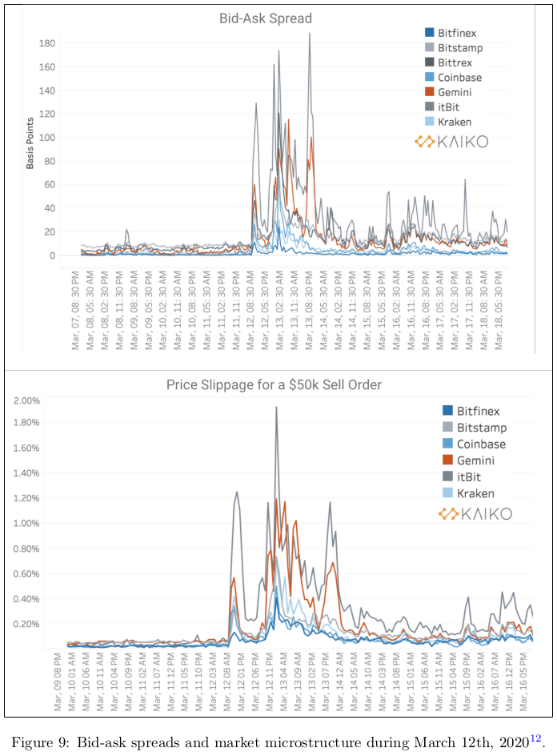

open markets¶
the space race for open markets¶
why we need open markets¶
tradfi:
obfuscating collateral, hidden risk mother of all blowups 2008
banks plebs and psychology
inflation at will since USA ditched gold backing
HFT frontrunning by large institutions with deep pockets
closed markets are highly standardized, unfit for purpose and tend toward monopolistic structure
very restricted access (even for analysis)
venture capitalism
transparancy anyone?
shorting & gamestop anyone?
new crowdloan models and it’s promise
trading sessions
current state of defi¶
- pros:
24/7
superpro power of incorruptible pristine collateral 1btc = 1btc
verify without rating agencies/banks = transparancy
non-custodial wallets
ability to invest in crowdloan models
- cons:
lessons learned in cefi repeating itself
CeFi cascades of doom who got rekt today? trading against own customers
difficult to use
HFT’s cousin`MEV`_ (Miner Extractable Value) miners can determine the order of when transactions are processed, mempool
gazmataz example ethereum
shitcoins memecoins

supercharged blowouts¶
In TradFi, infrastructure isn’t pushed to its limits. It’s usually the collateral that breaks. In crypto, the collateral never breaks, but infrastructure breaks regularly. Crypto is perfect collateral, and as we discussed above, it encourages a certain type of derivatives offering. But when supercharged collateral is combined with a naive version of TradFi infrastructure without any of its backstops, the system becomes prone to these extreme wipeouts.
a solution called vega¶
extremely open, not anonymous but pseudonymous
everything is verifiable, so the desk can’t trade against you
open markets, the community decides the markets eg: big mac index
why a vega token (not btc/eth)
incentivized liquidity pools¶
no race to zero as there is incentive to keep providing liquidity
LP providers loose their incentivized share when not providing liquidity when the going gets tough
hourly perpetuals trade on what the price will be in an hour
markets based on web2¶
ssl example
curl -vvI https://www.reddit.com/search/?q=paypal%20block
* Trying 151.101.37.140:443...
* TCP_NODELAY set
* Connected to www.reddit.com (151.101.37.140) port 443 (#0)
* ALPN, offering h2
* ALPN, offering http/1.1
* successfully set certificate verify locations:
* CAfile: /etc/ssl/certs/ca-certificates.crt
CApath: /etc/ssl/certs
* TLSv1.3 (OUT), TLS handshake, Client hello (1):
* TLSv1.3 (IN), TLS handshake, Server hello (2):
* TLSv1.2 (IN), TLS handshake, Certificate (11):
* TLSv1.2 (IN), TLS handshake, Server key exchange (12):
* TLSv1.2 (IN), TLS handshake, Server finished (14):
* TLSv1.2 (OUT), TLS handshake, Client key exchange (16):
* TLSv1.2 (OUT), TLS change cipher, Change cipher spec (1):
* TLSv1.2 (OUT), TLS handshake, Finished (20):
* TLSv1.2 (IN), TLS handshake, Finished (20):
* SSL connection using TLSv1.2 / ECDHE-RSA-AES128-GCM-SHA256
* ALPN, server accepted to use h2
* Server certificate:
* subject: C=US; ST=CALIFORNIA; L=SAN FRANCISCO; O=Reddit Inc.; CN=*.reddit.com
* start date: May 23 00:00:00 2021 GMT
* expire date: Nov 18 23:59:59 2021 GMT
* subjectAltName: host "www.reddit.com" matched cert's "*.reddit.com"
* issuer: C=US; O=DigiCert Inc; CN=DigiCert TLS RSA SHA256 2020 CA1
* SSL certificate verify ok.
* Using HTTP2, server supports multi-use
* Connection state changed (HTTP/2 confirmed)
* Copying HTTP/2 data in stream buffer to connection buffer after upgrade: len=0
* Using Stream ID: 1 (easy handle 0x55f8f2c2ee10)
> HEAD /search/?q=paypal%20block HTTP/2
> Host: www.reddit.com
> user-agent: curl/7.68.0
> accept: */*
>
* Connection state changed (MAX_CONCURRENT_STREAMS == 100)!
< HTTP/2 429
HTTP/2 429
< content-type: text/html; charset=UTF-8
content-type: text/html; charset=UTF-8
< x-ua-compatible: IE=edge
x-ua-compatible: IE=edge
< retry-after: 5
retry-after: 5
< x-frame-options: SAMEORIGIN
x-frame-options: SAMEORIGIN
< x-content-type-options: nosniff
x-content-type-options: nosniff
< x-xss-protection: 1; mode=block
x-xss-protection: 1; mode=block
< cache-control: max-age=0, must-revalidate
cache-control: max-age=0, must-revalidate
< x-moose: majestic
x-moose: majestic
< accept-ranges: bytes
accept-ranges: bytes
< date: Tue, 08 Jun 2021 06:54:15 GMT
date: Tue, 08 Jun 2021 06:54:15 GMT
< via: 1.1 varnish
via: 1.1 varnish
< vary: accept-encoding
vary: accept-encoding
< set-cookie: loid=0000000000clhaklhm.2.1623135255310.Z0FBQUFBQmd2eFFYRGJJV3RsWFA4aWJ4djlOXzdLV2o5eXh0bFNFZ1A4SDBpZXJiWUhpTktUR3dRUUJQc19LQVJuVnh1N1RwT2hHZGsyUEdqWXNzTllRVVdrNGNYVUVMOWpTT0V4eDFjekZjNzQ2RnFtbjZDQlB4LWhlYlFvT0dWeDRsV1BnZU01NzM; Domain=reddit.com; Max-Age=63071999; Path=/; expires=Thu, 08-Jun-2023 06:54:15 GMT; secure; SameSite=None; Secure
set-cookie: loid=0000000000clhaklhm.2.1623135255310.Z0FBQUFBQmd2eFFYRGJJV3RsWFA4aWJ4djlOXzdLV2o5eXh0bFNFZ1A4SDBpZXJiWUhpTktUR3dRUUJQc19LQVJuVnh1N1RwT2hHZGsyUEdqWXNzTllRVVdrNGNYVUVMOWpTT0V4eDFjekZjNzQ2RnFtbjZDQlB4LWhlYlFvT0dWeDRsV1BnZU01NzM; Domain=reddit.com; Max-Age=63071999; Path=/; expires=Thu, 08-Jun-2023 06:54:15 GMT; secure; SameSite=None; Secure
< set-cookie: session_tracker=Pbpr8DDPWUwkRPyT5F.0.1623135255310.Z0FBQUFBQmd2eFFYaVYzWEhXR1BERzg4OWpJSmVhNnB2dHM3dWRVM0NibU5fUDZEbjVMYk9WZXNDYzQ0QzJ2MjZrWjhOcVM4eVFJUkR6MTRucWdGWWRpWEMxM19xTnVCMlVfMnd1Z1hYRjg4cEcwSzBfUUxVbk5XS2J0eUhKaDBrWUZpcHRTLVczSGU; Domain=reddit.com; Max-Age=7199; Path=/; expires=Tue, 08-Jun-2021 08:54:15 GMT; secure; SameSite=None; Secure
set-cookie: session_tracker=Pbpr8DDPWUwkRPyT5F.0.1623135255310.Z0FBQUFBQmd2eFFYaVYzWEhXR1BERzg4OWpJSmVhNnB2dHM3dWRVM0NibU5fUDZEbjVMYk9WZXNDYzQ0QzJ2MjZrWjhOcVM4eVFJUkR6MTRucWdGWWRpWEMxM19xTnVCMlVfMnd1Z1hYRjg4cEcwSzBfUUxVbk5XS2J0eUhKaDBrWUZpcHRTLVczSGU; Domain=reddit.com; Max-Age=7199; Path=/; expires=Tue, 08-Jun-2021 08:54:15 GMT; secure; SameSite=None; Secure
< set-cookie: csv=1; Max-Age=63072000; Domain=.reddit.com; Path=/; Secure; SameSite=None
set-cookie: csv=1; Max-Age=63072000; Domain=.reddit.com; Path=/; Secure; SameSite=None
< set-cookie: edgebucket=kaModUrAuC4Jaj8L9A; Domain=reddit.com; Max-Age=63071999; Path=/; secure
set-cookie: edgebucket=kaModUrAuC4Jaj8L9A; Domain=reddit.com; Max-Age=63071999; Path=/; secure
< strict-transport-security: max-age=15552000; includeSubDomains; preload
strict-transport-security: max-age=15552000; includeSubDomains; preload
< server: snooserv
server: snooserv
< x-clacks-overhead: GNU Terry Pratchett
x-clacks-overhead: GNU Terry Pratchett
< content-length: 1064
content-length: 1064
<
* Connection #0 to host www.reddit.com left intact
you’ll be able to use these SSL header information to put web2 information on web3 and prove it is legit How will that be done? with zero knowledge proofs, namely zk-snarks (chain of snapshots vs chain of blocks)
ELI5 zero knowledge snarks¶
A geologist hiking through a forest encounters a row of heavy boulders (Blocks in the chain)
She wants to examine their marble interior (Validate their transactions)
She cuts them open, studies them and reports her findings
Colleagues from around the world (other validators) want to see the boulders, but can’t afford the cost of travel. (The cost of running a fully validating node).
Her solution: she takes a photo of each boulder. (The photos are zero knowledge proofs, aka zk-SNARKs — a snapshot of each block)
Now she doesn’t need the boulders — the photos are just as good
enable full nodes to discard blocks after they’re validated, replacing them with zk-SNARKs, a snapshot of each block
A chain of snapshots is a huge improvement over a chain of blocks, but the problem isn’t solved: the chain will still grow, and we want it constant-sized.
Our geologist has a novel solution. She takes a photo of the first boulder…then takes a photo of the second boulder and the first photo.
Now she doesn’t need the first photo. After all, it’s in the second photo.
She keeps taking snapshots of each boulder alongside the most recent photo, and sends her colleagues the last one.
shitcoins & rug pulls
demo on open marketplace¶
vegawallet usage¶
download the wallet here: https://github.com/vegaprotocol/go-wallet/releases/latest
./vegawallet -h
Usage:
vegawallet [command]
Available Commands:
genkey Generate a new keypair for a wallet
help Help about any command
list List keypairs of a wallet
meta Add metadata to a public key
service The wallet service
sign Sign a blob of data
taint Taint a public key
verify Verify the signature
version Show the version of the vega wallet
Flags:
-h, --help help for vegawallet
--no-version-check Do not check for new version of the Vega wallet
--root-path string Root directory for the Vega wallet configuration (default "/home/dadude/.vega")
Use "vegawallet [command] --help" for more information about a command.
$ ./vegawallet service run
Wallet http service started at: http://localhost:1789
Wallet console proxy started at: http://localhost:1847 proxying testnet.vega.trading
Available endpoints:
- status: GET http://localhost:1789/api/v1/status
- login: POST http://localhost:1789/api/v1/auth/token
- logout: DELETE http://localhost:1789/api/v1/auth/token
- create wallet: POST http://localhost:1789/api/v1/wallets
- create key: POST http://localhost:1789/api/v1/keys
- list keys: GET http://localhost:1789/api/v1/keys
- get key: GET http://localhost:1789/api/v1/keys/:keyid
- taint key: PUT http://localhost:1789/api/v1/keys/:keyid/taint
- update meta: PUT http://localhost:1789/api/v1/keys/:keyid/metadata
- sign data: POST http://localhost:1789/api/v1/sign
- sign: POST http://localhost:1789/api/v1/messages
- sign sync: POST http://localhost:1789/api/v1/messages/sync
- sign commit: POST http://localhost:1789/api/v1/messages/commit
- download wallet: GET http://localhost:1789/api/v1/wallets
time to choose¶
when moon?¶

centralized markets or open markets it is your time to choose …
I leave you with the same advice Dr. Freeman got before when he had to choose :)~
addendum¶
stats on MEV: https://explore.flashbots.net/
possible solutions to the MEV problem
privacy-preserving smart contracts https://defiprime.com/secretswap
order fairness via randomized transaction execution order https://medium.com/coinmonks/mangata-a-polkadots-new-hero-decentralized-exchange-e17eb0105942
will add more-
test
#ref:sphx_glr_auto_examples_plot_example.py add backticks here
# .. literalinclude:: ../../gallery_code/sin_demo.py
# .. image:: ../../_images/sphx_glr_sin_demo_thumb_001.png